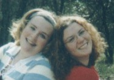

|
|
| Wedding Party : Bridesmaid - Kristina Montelauro |
| Kristina and Amanda have been friends since their freshmen year in high school, where they bonded over being "housewives" in the musical "Working." Little did they know that they would become so close that they would start the ever-famous FGP three years later. Her love for cats (R.I.P. Fred) brought Amanda and Kristina even closer. Kristina especially enjoys traveling long distances with Amanda (i.e. Italy) and playing UNO, where the goal of the game is to let anyone, but Amanda, win. When Amanda got her tonsils taken out and needed a nurse, Kristina was ready and willing to take the job- for that, Amanda is ever thankful. Over the years Kristina (along with Mindy and DDB) has been an incredible friend to Amanda. |
|